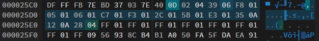
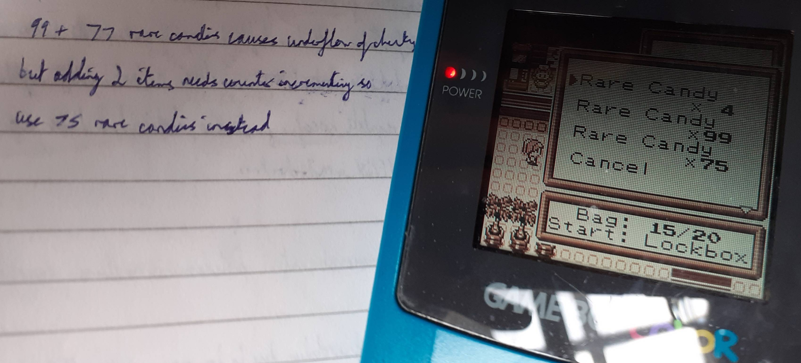

i ended up going down a funny little rabbit hole today
it started with me continuing a playthrough of a pokemon red rom hack called pokemon brown and generally winding down from a day of revision. i finally got to the pokemon league as you do and challenged the first member of the elite four...and their pokemon was level 58. my pokemon after battling every trainer in the game were around level 48 and some research revealed that levels went up to 78 and the only way to prepare was grinding/cheese. being a fan of neither i figured that maybe there might be a way to edit the save and avoid all of that.
of course pkhex normally suits those needs but the tool unsurprisingly has no support for some rom hack, especially one with cross-gen evolutions and new key items. so i considered my options and decided that i'd just do it myself in a good old hex editor. i have enough experience dealing with game file formats so figured i should be able to do it.
i decided the best and most efficient way to solve my problem was to put in some rare candies. this is because i figured the data would be comparitively easier to find than the individual pokemon data amongst all of their variables. luckily i had four rare candies and i didn't have four of any other item which meant i had a unique identifier for the item. i also moved them to the bottom of my bag in hopes this would make it even easier to identify.
finally opening up the save in the hex editor i sifted through the bytes with the value four and basically found exactly what i was looking for! you can see that the bytes following the four are seven repeating FF 01 motifs.  the bag's capacity is 20 and the rare candy is the 13th item so this must be the empty space in the bag. this also tells us items are represented with two bytes - considering the count is one byte the preceding one must be the item type. so i just change the four to a ninety-nine and boot up the game with the modified save.
...but the game says the save has been corrupted which reminds me of year 11 computer science. sure enough a quick google search tells me that pokemon red saves contain an eight-bit checksum which is the inverted overflowed sum of the data bytes. i can't be arsed to calculate a checksum every time i make an edit so i do some quick maths instead...
the overflow can be exploited by making changes to the value of the bytes which sum up to 256 since it overflows to 0. i can't do that just by changing the number of rare candies but i can do it by adding some to the empty slots! the FF 01 sums to 256 so replacing these conveniently underflows and means what's added changes checksum. rare candies use 40 for their item code so adding 99 rare candies in one slot and 77 in another adds up to 40+99+40+77=256! with these changes the game loads the save and the candies are there...but aren't selectable?
oh...the number of items in the bag didn't change so that must be stored somewhere. conveniently it's the byte just before the list of items so i can increment that by 2 and decrement rare candies by 2 to keep the checksum. after that little tweak, at long last i have all the rare candies i need to avoid some stupid grinding :) 